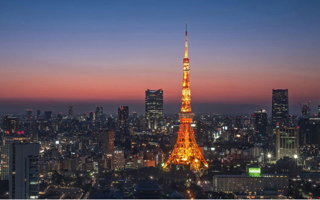
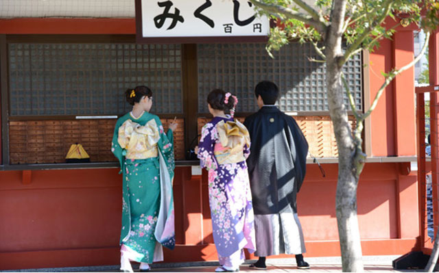
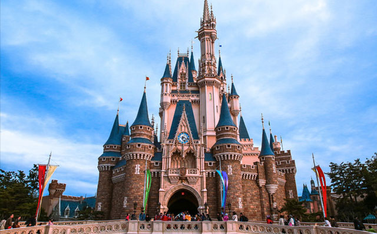
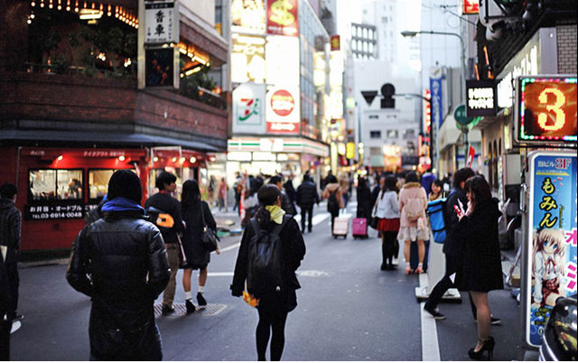
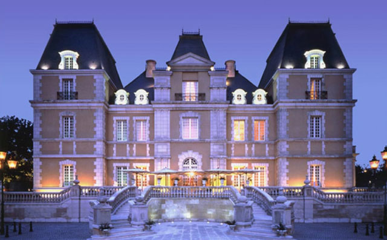
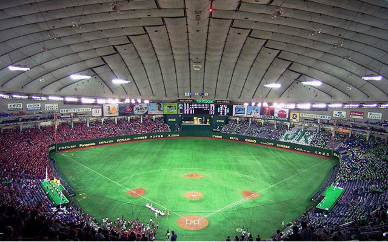
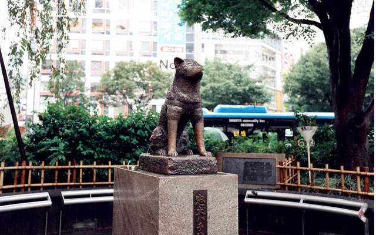
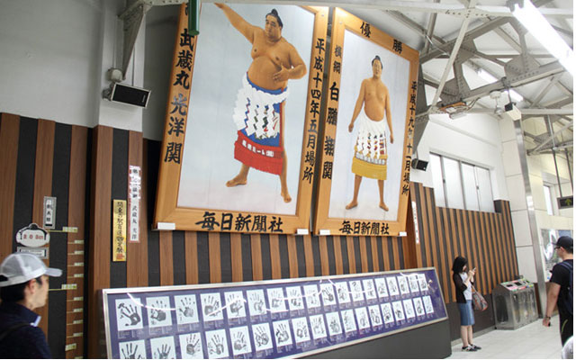

樱花是日本的国花，在现代被日本人视作日本的精神象征。每年春季，和朋友、亲人一起席地而坐，一边赏樱一边畅饮，是日本人一年中最重要的事。上野公园 、千鸟之渊 、新宿御苑 、目黑川等都是不错的观樱地点。观赏和拍摄樱花的最佳时间段是从盛开到凋落前樱吹雪的短短数日，而夜间加上灯光效果的夜樱别有一番风味。由于樱花盛开时许多公司和学校都会组织集体赏花活动，提早抢占一个优越的位置十分重要。举办樱花节的地方会出售花见团子、现烤仙贝、鲷鱼烧等小吃，请和本地人一样，自己准备一个垃圾袋，保持樱花树下的整洁美丽。
2、体验东京之夜 想要体会东京这座城市的魔力，最好的方法是当夜色降临时，登上高处，东京最好的景色就在眼前展开。在晚上，地标东京塔是暖暖的橙色，通体发光；而天空树则是鲜明的冷色调，整个城市像千万颗闪耀的星星，鳞次栉比的大厦在夜间格外漂亮，灯光形成了自然的边界线，期间贯通的道路也被各种汽车灯光装饰了起来。目前东京观赏夜景的好去处包括东京塔、天空树、世界贸易中心大厦、六本木之丘、电信中心展望台、新宿都厅等。
3、和东京人一起迎接新年 虽然东京是个现代化的大城市，但是日本的传统节日元旦在这里依然很受重视。一过圣诞节，东京的所有店铺就会换上非常有日本味的松树装饰，12 月 31 日，可以在居酒屋中和东京人一起观看日本春晚——红白歌会，或者加入涩谷街头的狂欢，迎接倒数的钟声。第二天，东京人会盛装前往市内的神社和寺庙进行参拜，许多女性会穿上最为华贵的和服。旅行者可以加入其中，再前往各个商店抢购新年福袋，非常有节庆的气氛。如果住在家庭旅馆或者温泉酒店里，还可以吃到只有新年才有的年菜料理，并和当地人一起打制年糕。
4、浅草试穿和服 和服在日语里又称吴服，造价不菲，一套普通的和服造价要几千到十几万元人民币，而且穿着程序复杂，日本人一般在毕业、相亲、结婚和节庆等重要场合才会穿着。在东京的浅草，可以花数百人民币租赁一套心仪的和服，由专人帮忙穿戴后，坐上传统的人力车摄影留念。夏天也可以租赁更加便宜的和式浴衣，和当地人一起去看看东京的花火大会。
5、散步在东京的街头 东京适合散步的区域包括江户风情浓厚的浅草、柴又、赤坂、人形町，这些地方保留了许多老店和百年前的布局。你可以逛一逛不知名的小神社，在昭和气息的商店街中吃一碗天妇罗荞麦面；洋气又精致的自由之丘、吉祥寺、代官山等地，甜品店、咖啡店和时尚精品店林立，最适合女生结伴前往；银座、东京大学和日本桥则见证了日本的近代史，保留着明治、 大正、昭和到现在的时代痕迹；六本木、表参道除了是大牌林立的高档消费场所外，更代表了日本当代建筑设计的最高水平。东京为行人设计了良好舒适的步行环境，绿树成荫街道整洁宽敞，机动车司机彬彬有礼，散步可能是体会这座城市文明程度最好的途径。
6、品味米其林餐厅 东京是饕客们的天堂，也是米其林美食指南所青睐的城市。比起欧美国家米其林星级餐厅不菲的消费水平，东京的价格选择范畴宽泛了许多，从千元日元左右的荞麦面到人均三万日元的寿司之神，都出现在了米其林的榜单上。无论是日料代表性的怀石料理、高档和牛、手握寿司、河豚宴、鳗鱼饭，还是三星级法国大餐、创新分子料理，吃货们在东京总会有发现，总会有惊喜。
7、现场感受棒球比赛的激情 棒球是日本最普及的运动，家喻户晓。在联赛期间，电视台几乎每天都直播棒球比赛，每次联赛都会给日本带来不小的经济效益，而且日本的大学和中学都拥有相当数量的棒球队。两个大型的职业联赛：中央联赛和太平洋联赛，每年从4月一直进行到10月，最后在日本最终的季后赛上汇合。东京巨蛋棒球比赛场就是最后比赛的地方，也是有名的观光场所，没有比赛时，这里也举行大型演唱会。
8、寻找忠犬八公的足迹 忠犬八公和主人之间真实、感人的故事可能很多人都听说过。1987 年由日本演员仲代达矢主演这个改编的真实故事，在日本引起了轰动，2009年由美国导演莱塞•霍尔斯道执导并在美国上映，同样引起了巨大的反响，至今都感动着无数人。现在这只忠犬八公雕塑立在它生前一直等候主人的涩谷车站的门口，仿佛它还在等待主人的到来，给人安定祥和之感。这里 也是涩谷街区最为有名的集合地点，每天有无数时髦男女站在八公雕塑旁等待约会对象的到来。
9、感受“肉搏”文化 当看到电视里两个肥胖的男人互相抓着仅供遮羞的裤衩在圆环里肉搏，你也许会发笑。但是在日本，相扑有着举足轻重的地位，被日本人尊为“国技”。大多数优秀的选手都是在 18-35 岁之间，并且经过严格的训练，男相扑选手当然是越“膘肥体胖”越有利，所以为了尽量长胖，男相扑选手每天除了饱餐两顿饭外就是长时间睡觉，期间只进行短时间的训练。想 要进一步了解日本的相扑文化，可以去东京两国国技馆观看一场相扑比赛，现场感受其魅力。